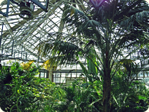
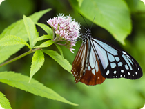

植物園の紹介
当園の概要
ふれあいグリーンガーデンは、都市部で失われつつある人と緑とのふれあいを創出・促進する目的で、1995年に開園しました。
四季を通じて草木や花の美しさを感じていただけるよう、温度や湿度を最適にした温室で徹底した管理を行っています。
このため、日本とは気候の異なる地域に生育する植物の育成が可能になり、日本で普通に生活しているとまず見かけることのない、エキゾチックな植物たちを観賞することができます。
また、当園では、近隣大学との連携のもと、薬用植物の研究も行っています。植物には、私たちの体調を整えてくれたり、病気を治してくれたりする作用を持つものもあるのです。奥深い植物の世界を、どうぞお楽しみください。
育成室について
研究用や展示用の植物を育成する育成室には、自然に近い状態にするため、昆虫が放たれているところもあります。
運が良ければ、ガラス越しに、虫達による受粉の様子や、花の蜜を集める姿などが見られるかもしれません。ぜひ探してみてください。